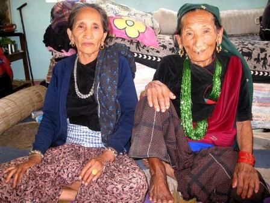

Дурі (масенремпулу) - мова власне сулавесійскої зони малайсько-полінезійських мов, була поширена на півдні острова Сулавесі в Індонезії. За даними SIL, в 1991 році на ньому говорило 95 тис. чоловік.

Кілька років тому в засобах масової інформації з'явилася літня жінка з Непалу, Сома Деві Дура, остання жінка, яка говорила на мові Дура. Жінку називали багатим джерелом пісень і оповідань на рідній мові. Кедар Нагіла вивчав непальські мови і працював з нею, щоб скласти невеличкий словник. Однак оскільки навіть за життя Сома Деві спілкувалася зі своїми родичами на інших мовах, ця мова була втрачена. Дура - один з багатьох непальських мов, яких більше 120.
Через девіз: одна нація - одна мова, одна династія - одна мова, 96% з них знаходяться під загрозою тієї ж долі.
